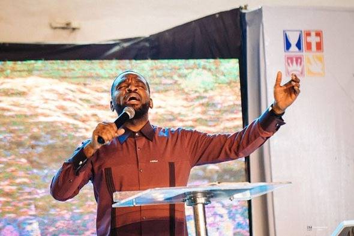
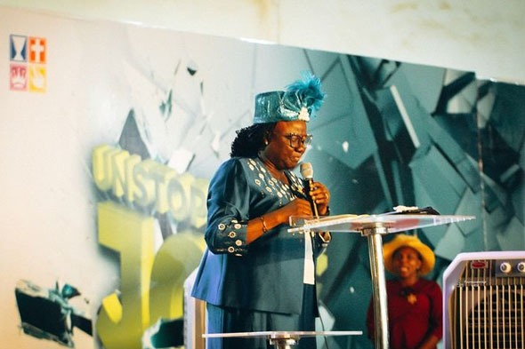
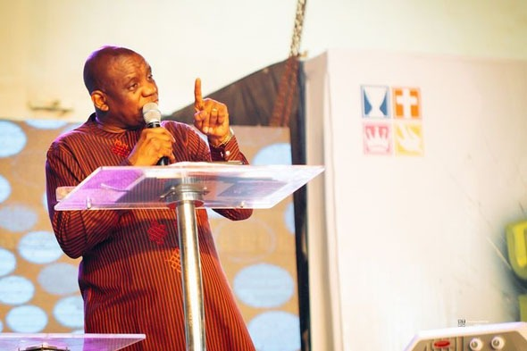

Conceived in vision and established in faith, FONE stands as a beacon of intercession, counseling, and spiritual warfare. Join our community on the wall.


How God birthed and expanded the Foursquare National Evangelist (FONE) body.
The vision of National Evangelist was conceived by our former General Overseer, Rev. Felix Meduoye. In October 2012, he invited Rev. Moses Omogunwa to write a proposal on the formation of the body. Rev. Omogunwa then invited Pastors Wale Odubanjo and Bayo Aderibigbe to join in the preparation.
The proposal was submitted without delay. A few brethren gathered for the inaugural meeting at the Foursquare International Conference Centre, Idimu. Shortly after, Rev. Adebayo Adebisi brought a vision for a prayer program tagged "Baracha Night". The GO advised him to merge it into the National Evangelist vision. Under a humble agreement, Rev. Omogunwa stepped down for Rev. Adebisi to coordinate, launching the first official program on Tuesday, October 23, 2012.
The leadership officially adopted the name Foursquare National Evangelist (FONE) (as against Council of Foursquare Evangelist - COFE). The pioneer executives and assisting evangelists included: Henry Obialor, Sunday Ashe, Godbless Obasi, Mike Ajewole, James Bamidele, Adelakun Adodo, Mrs. Kemi Daniel, late Gbenga Oluwarimisola (Treasurer), Esther Adekunle David, and Ayo Adeyibi as Secretary.
In 2015, Evangelist Moses Omogunwa, serving as Deputy Chairman, took over the mantle of leadership with an expanded executive board. Under his leadership, the organization grew significantly. Following his home-going in January 2021, Ayo Adeyibi acted as Chairman until November 2021.
In November 2021, Evangelist Idowu Bashiru was appointed Chairman of FONE. Under his dynamic leadership, many District Chapters have been successfully inaugurated across the nation, expanding the prayer and evangelistic reaches to new borders.
Join us in our scheduled times of corporate prayer, deliverance, and specialized fellowships.
Every 1st Monday of the Month
11:00 PM – 3:00 AM
Every Tuesday
12:00 Noon – 2:00 PM
3rd Tuesday of March, June, Sept & Dec
12:00 Noon – 4:00 PM
& 12:00 Midnight – 4:00 AM
4th Tuesday of Jan, April, July & Oct
12:00 Noon – 3:00 PM
3rd Tuesday of Feb, May, Aug & Nov
12:00 Noon – 3:00 PM
Dedicated ministers steering the vision and coordinating the evangelistic and prayer efforts.
Leading the vision and spearheading the expansion of District Chapters nationwide.
Coordinating administration and communications across chapters since the beginning.
Steward of finances and resource allocation for mission drives.
Directing intercession lists, coordinating vigils, and prayer networks.
Planning outreach crusades, rural evangelism, and local planting support.
Pioneer assistant evangelist now overseeing board operations and mission alignment.
Pioneer coordinator of Baracha Night and early pillar of the FONE movement.